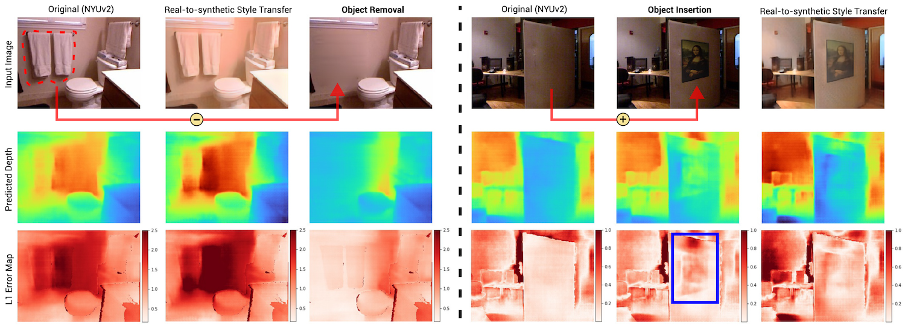
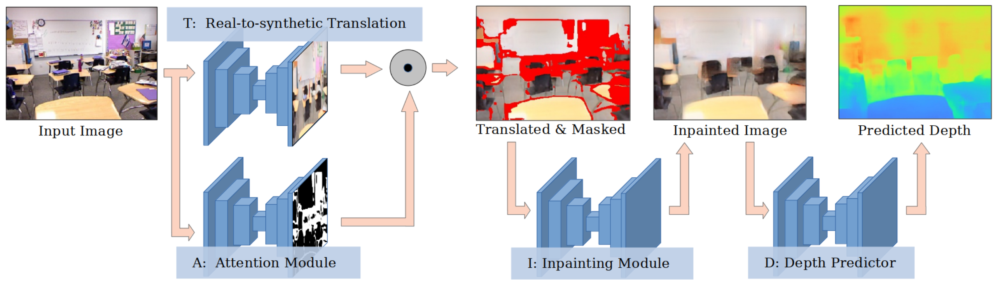

Domain Decluttering: Simplifying Images to Mitigate
Synthetic-Real Domain Shift and Improve Depth Estimation

Abstract
Leveraging synthetically rendered data offers great potential to improve monocular depth estimation, but closing the synthetic-real domain gap is a non-trivial and important task. While much recent work has focused on unsupervised domain adaptation, we consider a more realistic scenario where a large amount of synthetic training data is supplemented by a small set of real images with ground-truth. In this setting we find that existing domain translation approaches are difficult to train and offer little advantage over simple baselines that use a mix of real and synthetic data. A key failure mode is that real-world images contain novel objects and clutter not present in synthetic training. This high-level domain shift isn't handled by existing image translation models.
Based on these observations, we develop an attentional module that learns to identify and remove (hard) out-of-domain regions in real images in order to improve depth prediction for a model trained primarily on synthetic data. We carry out extensive experiments to validate our attend-remove-complete approach (ARC) and find that it significantly outperforms state-of-the-art domain adaptation methods for depth prediction. Visualizing the removed regions provides interpretable insights into the synthetic-real domain gap.
Overview

Citing this work
If you find this work useful in your research, please consider citing:
@inproceedings{zhao2020domain,
title={Domain Decluttering: Simplifying Images to Mitigate Synthetic-Real Domain Shift and Improve Depth Estimation},
author={Zhao, Yunhan and Kong, Shu and Shin, Daeyun and Fowlkes, Charless},
booktitle={Proceedings of the IEEE/CVF Conference on Computer Vision and Pattern Recognition},
pages={3330--3340},
year={2020}
}
Acknowledgements
This research was supported by NSF grants IIS-1813785, IIS-1618806, a research gift from Qualcomm, and a hardware donation from NVIDIA